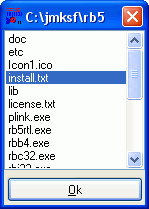

Dateioperationen im Filesystem
Um Dateien zu verwalten, bietet Ihnen RapidBATCH die Anweisungen und Funktionen NEWFILE, DELFILE, COPYFILE, RENAMEFILE, FILEEXISTS und FINDFILES.
Die Anweisung NEWFILE erzeugt eine leere Datei, DELFILE löscht eine existierende Datei. Die Syntax ist bei beiden Anweisungen äquivalent:
rem Datei erzeugen
newfile 'leer.txt'
if [errorcode] = '0' echo 'Datei leer.txt wurde erzeugt!'
rem Datei löschen
delfile 'leer.txt'
if [errorcode] = '0' echo 'Datei leer.txt wurde wieder gelöscht!'
Auch hier können wir (übrigens bei jeder Datei-spezifischen Anweisung) wieder über die Variable [errorcode] prüfen, ob die jeweilige Dateioperation erfolgreich war ([errorcode] = '0') oder ob nicht ([errorcode] = '-1').
Um eine Datei zu kopieren bietet RapidBATCH die COPYFILE-Anweisung. Sie kopiert den Inhalt im Verhältnis 1:1 aus einer Quelldatei in eine Zieldatei. Die Anweisung RENAMEFILE ermöglicht das Umbenennen bzw. Verschieben einer Datei.
Beispiel:
rem C:\jmksf\rb5\readme.txt in C:\test.txt kopieren...
copyfile 'C:\jmksf\rb5\readme.txt', 'C:\test.txt'
rem C:\TEST.TXT öffnen...
open 'C:\test.txt'
rem C:\TEST.TXT wieder löschen...
delfile 'C:\test.txt'
rem C:\jmksf\rb5\readme.txt in C:\test.txt umbenennen...
renamefile 'C:\jmksf\rb5\readme.txt', 'C:\test.txt'
rem C:\TEST.TXT öffnen...
open 'C:\test.txt'
rem C:\test.txt wieder zurück in C:\jmksf\rb5\readme.txt benennen...
renamefile 'C:\test.txt', 'C:\jmksf\rb5\readme.txt'
COPYFILE und RENAMEFILE erlauben keine Wildcards, d.h. es kann immer nur eine einzelne Datei kopiert werden. Wie man aber trotzdem mehrere Dateien kopieren/verschieben kann, besprechen wir weiter unten.
Ob eine Datei bereits existiert oder nicht lässt sich mit der Funktion FILEEXISTS überprüfen.
fileexists [fx] = 'C:\AnyFile.txt'
if [fx] = '-1'
echo 'Datei existiert nicht.'
else
echo 'Datei existiert!'
endif
FILEEXISTS gibt also den Wert '-1' an die Rückgabevariable zurück, wenn die Datei nicht existiert. Ansonsten ist der Rückgabewert '0'.
Zu den leistungsstärksten und effektivsten Funktionen, die RapidBATCH bereitstellt, gehört die FINDFILES-Funktion. FINDFILES listet alle Dateien eines Verzeichnisses, ermöglicht aber auch das Einlesen eines Verzeichnisses mitsamt aller Unterverzeichnisse.
Folgendes Script erzeugt eine Liste aller Dateien des aktuellen Verzeichnisses und zeigt diese in einem LISTBOX-Dialog an.
rem Dateiliste erzeugen
findfiles [dateiliste] = '*', '1'
rem Anzeige der Dateiliste in einer LISTBOX
listbox [datei] = [current], [dateiliste]
if [datei] ! '' echo 'Gewählte Datei: ' # [datei]
end

Die mit FINDFILES erzeugte Dateiliste wird in einer LISTBOX zur Anzeige und Auswahl gebracht.
FINDFILES erwartet als Parameter einen so genannten Pfad-/Dateifilter, d.h. es werden nur Dateien, die sich im angegebenen Verzeichnis befinden und dem gegebene Dateifilter entsprechen, gelistet. Für den Dateifilter können so genannte Wildcards benutzt werden; Diese Wildcards (Platzhalter) werden durch die Zeichen * und ? repräsentiert und ermöglichen das Suchen nach bestimmten Mustern. Ein * ist ein Wildcard für ein beliebiges Textmuster, ? für ein einzelnes Zeichen.
Der zweite Parameter repräsentiert die Tiefe, bis zu wieviele Unterverzeichnisse eingelesen werden sollen; Der Wert 1 bedeutet, dass nur das aktuelle bzw. angegebene Verzeichnis durchsucht wird, 2 durchsucht das aktuelle bzw. angegebene Verzeichnis und alle darin enthaltenen Unterverzeichnisse. Haben diese Unterverzeichnisse wiederum Unterverzeichnisse, werden diese nicht mehr eingelesen; Wenn man diese auch einlesen will, muss man als Tiefe den Wert 3 angeben. Diese Tiefen-Angaben lieflen sich jetzt bis ins Unendliche fortführen. Wird als Tiefe der Wert 0 angegeben, so wird bis zu einer maximalen Verzeichnistiefe von 255 gesucht und gelistet.
Rückgabewert von FINDFILES ist eine Dateiliste, in der jeder Dateiname durch das in der vordeklarierten Variablen [std_sep] definierte Separationszeichen (im Normalfall das Pipe-Zeichen "|") getrennt ist. Wir können diese Liste daher direkt an LISTBOX als Item-Liste übergeben.
Um einmal die Verwendung der verschiedenen Filter, Wildcards und Verzeichnistiefenangaben zu demonstrieren, hier ein paar kommentierte Beispielaufrufe von FINDFILES:
rem Alle Dateien im aktuellen Verzeichnis auflisten:
findfiles [dateiliste] = '*', '1'
rem (Der Filter "*" sucht nach allen Dateien, die es im Verzeichnis gibt)
rem Alle TXT-Dateien im aktuellen Verzeichnis und allen Unterverzeichnissen
rem bis zu einer Ebene auflisten:
findfiles [dateiliste] = '*.txt', '2'
rem (Der Filter "*.txt" sucht nach allen Dateien, die die Dateiendung
rem .TXT haben. Es werden also z.B. Dateinamen wie "hallo.txt", "x.txt"
rem und "txt.txt" eingelesen (wenn diese denn existieren)).
rem Alle Dateien im aktuellen Verzeichnis auflisten, die mit "hallo"
rem beginnen und mit ".DOC" enden:
findfiles [dateiliste] = 'hallo*.doc', '1'
rem Alle Dateien im aktuellen Verzeichnis auflisten, die mit "h", einem beliebigen
rem Buchstaben und "llo" beginnen und mit irgend einer Dateiendung enden:
findfiles [dateiliste] = 'h?llo*.*', '1'
rem (Hier werden z.B. Dateinamen wie "hallo92.sav", "hello.bak", "hullokkn.exe"
rem und "hhlloHALLO." gefunden!)
rem Alle Dateien im aktuellen Verzeichnis und allen Unterverzeichnissen
rem auflisten, die eine Dateiendung haben:
findfiles [dateiliste] = '*.*', '0'
rem Alle .RB-Dateien im aktuellen Verzeichnis auflisten, die nur einen
rem Buchstaben im Dateinamen haben:
findfiles [dateiliste] = '?.rb', '1'
rem (Der Filter "?.rb" sucht nach allen Dateien, die einen einzelnen
rem Buchstaben vor dem Punkt haben (? = einzelner Buchstabe), es werden
rem also nur die Dateien "a.rb", "x.rb" oder "1.rb" gelistet (wenn
rem diese denn existieren))
Zum Schluss noch ein Beispiel, wie Sie mit Hilfe der Funktionen FINDFILES und GETTOK eine Prozedur programmieren, die mehrere Dateien in ein Zielverzeichnis kopiert (mit Hilfe von COPYFILE, da diese Funktion ja von sich aus keine Wildcards unterstützt):
proc copyfiles: [quelle], [ziel], [filter]
rem Lokale Variablen vereinbaren
dec [i], [datei], [dateiliste]
rem Dateiliste holen
findfiles [dateiliste] = [quelle] # '\' # [filter], '1'
if [dateiliste] = '' ret
rem Ziel-Verzeichnis zur Sicherheit erzeugen
rem (wird natürlich, wenn es schon existiert, nicht überschrieben)
mkdir [ziel]
rem Dateiliste durchlaufen
[i] = '0'
repeat
[i] + '1'
gettok [datei] = [dateiliste], '|', [i]
rem Wenn [datei] nicht leer ist, Datei von
rem Quelle nach Ziel kopieren
if [datei] ! ''
copyfile [quelle] # '\' # [datei], [ziel] # '\' # [datei]
endif
until [datei] = ''
endproc
rem Aufruf (kopiert alle Dateien mit dem Muster "*.*" aus dem
rem Verzeichnis "C:\jmksf\rb5" in das Verzeichnis "C:\test"):
copyfiles 'C:\jmksf\rb5', 'C:\test', '*.*'
end
Copyright © 2000-2006 by J.M.K S.F. Software Technologies, Jan Max Meyer
All rights reserved.